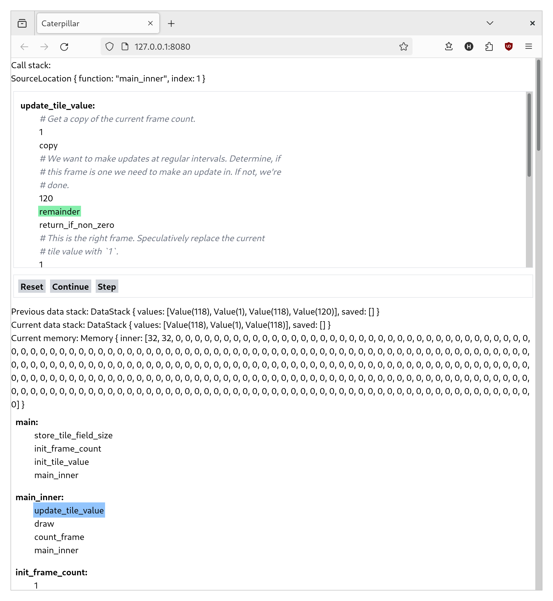

Daily Note - 2024-05-18
Hey, I'm Hanno! These are my daily notes on Crosscut, the programming language I'm creating. If you have any questions, comments, or feedback, please get in touch!
This note was published before Crosscut was called Crosscut! If it refers to "Caterpillar", that is the old name, just so you know.
As I've explained before, the core question of the current prototype is, whether a debugger is a practical option to tame even a simplistic and confusing language. If that's the case, then I can use Caterpillar in earnest from early on, while the language is growing slowly.
Early signs have been good, but the development of the prototype is still a bit of a back and forth: I'll make some progress on the game, then I run into a problem that takes too much effort to understand, so I improve the debugger until understanding the problem becomes easy. I just went through another debugger improvement phase, and here's how it looks right now:

It's a bit easier to see where you're currently at in the code, and there are "Step" and "Continue" buttons to better control the program. I won't consider this prototype successful (i.e. the core question answered) until I've made a full game with it, but I continue to be happy with the progress.